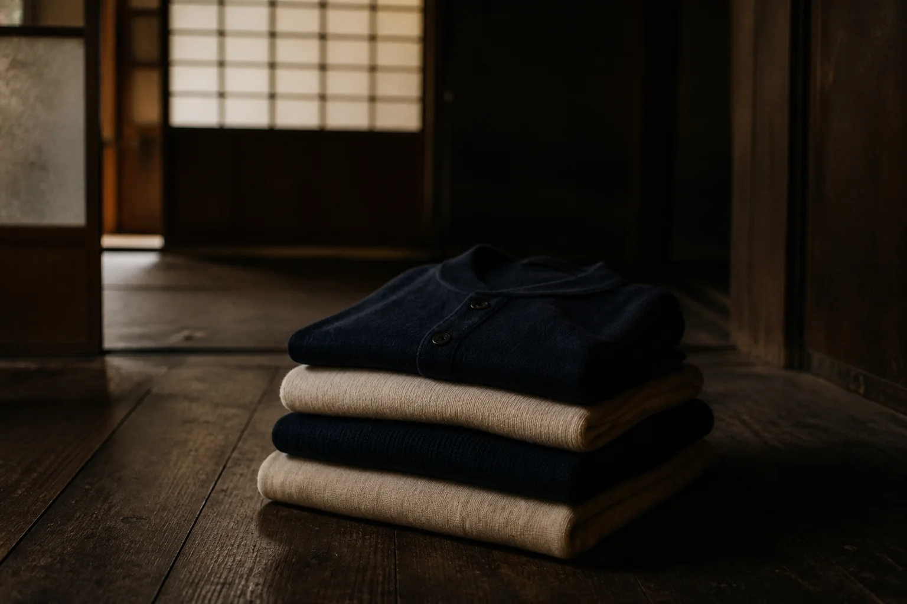
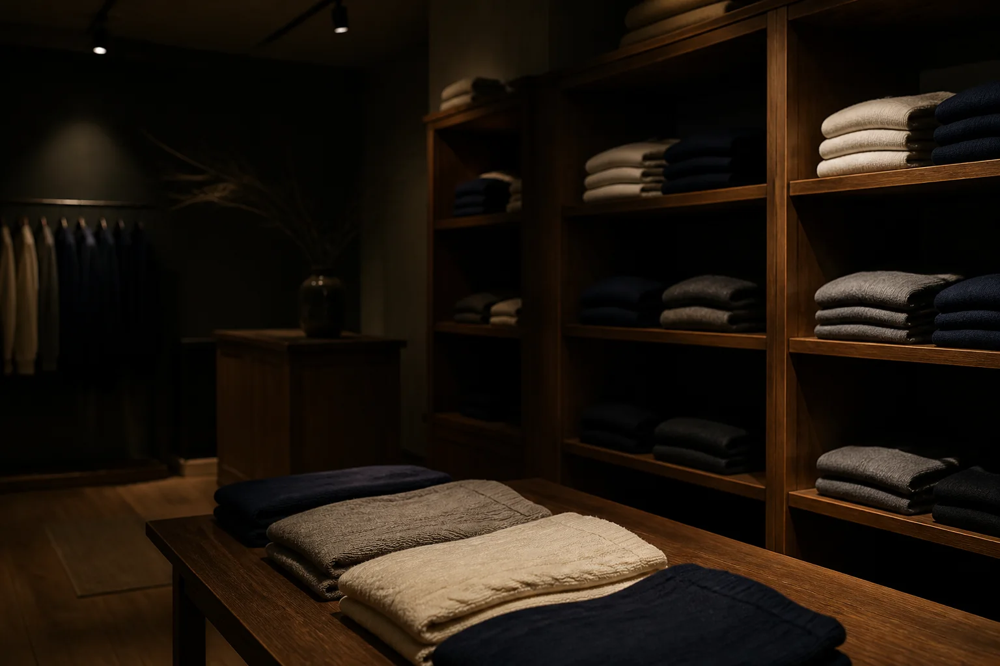

- Top
- 快温について
快温について
休息を、温度から整える。
金沢の織布業から生まれた
リカバリーウェアです。
眠る前の数十分を、
あたたかく過ごすために
仕事を終えて家に帰ると、体は少しずつ熱を手放していきます。お風呂で温まっても、髪を乾かしているあいだに足先は冷えてしまう。横になってから眠りにつくまでの時間が、なんとなく長く感じる。そんな夜は、だれにでもあるはずです。
KAION は、その「冷めていく速さ」をゆるめるための衣服です。暑すぎず、寒すぎず。体にとってちょうどいい温度を、着ているあいだ保ち続けること。それを「快温」と名づけました。
部屋着として、パジャマとして、休日の散歩着として。一日の終わりと始まりのそばに置いてもらえたらと考えています。
機能繊維「CERANAGI」

CERANAGI（セラナギ）は、セラミックスの微粒子を糸の芯に含ませた、KAION の自社開発繊維です。体から出ていく熱を受けとめ、遠赤外線としてゆっくり肌へ返します。
微粒子は糸の内側にあるため、洗濯をくり返しても落ちにくく、肌に触れる表面はやわらかな綿の風合いのまま。ごわつきや重さを感じさせない生地に仕上げています。
からだの温かさを保つための部屋着です。病気の治療や予防を目的としたものではなく、感じ方には個人差があります。
- 01
熱を受けとめる
肌から逃げていく熱を、糸の芯にあるセラミックスの微粒子がいったん受けとめます。
- 02
遠赤外線で返す
受けとめた熱は、遠赤外線として肌へ返ります。じんわりとしたあたたかさが続きます。
- 03
ふり幅を小さく
体温の上がり下がりをおだやかに保ち、着ていることを忘れるくらいの心地よさに。

血のめぐり遠赤外線のはたらきで、血行を促します。
肩と首のこわばりこりやすい肩まわりを、生地でやさしく包みます。
眠りの深さ寝返りを妨げない縫い代と、ゆとりのある形にしました。
翌朝の軽さそのまま外へ出られる、整った見た目に。
代表メッセージ

祖父が金沢で機屋を始めたのは、1958年のことです。それから六十年あまり、私たちは寝具やインナーのための生地を織り続けてきました。
KAION の始まりは、工場で働く人たちの「冬の夜勤明けは、体の芯が冷えて眠れない」という声でした。織り手として何ができるかを考え、糸の段階から温度に向き合うことにしました。CERANAGI の試作は、五年で百本を超えています。
休むことは、明日のための準備です。着るものから、その準備を少しだけ手伝えたら。そう考えて、KAION をつくりました。
株式会社カイオン 代表取締役和久井 湊
あゆみ
石川県金沢市で織布業として創業。寝具用の綿織物を手がける
肌着・インナー向けの丸編み生地の生産を始める
温度を保つ繊維の研究を、県内の大学と共同で始める
セラミックス微粒子を糸の芯に含ませた繊維「CERANAGI」が完成
社名を株式会社カイオンに改め、本社を金沢市片町へ移す
9月、リカバリーウェア「KAION」デビュー。直営店12店舗を開く
会社概要
| 会社名 | 株式会社カイオン（KAION Inc.） |
|---|---|
| 代表者 | 代表取締役 和久井 湊 |
| 創業 | 1958年（織布業として） |
| 資本金 | 3,000万円 |
| 従業員数 | 86名（2026年9月現在） |
| 本社 | 〒920-0981 石川県金沢市片町2-47-11 カイオン金沢ビル 4F |
| 連絡先 | TEL 076-298-0412（平日 10:00–17:00）／FAX 076-298-0413 support@kaion-wear.jp |
| 事業内容 | リカバリーウェアの企画・製造・販売 機能繊維「CERANAGI」の研究開発 直営店「KAION STORE」の運営（全国12店舗） |